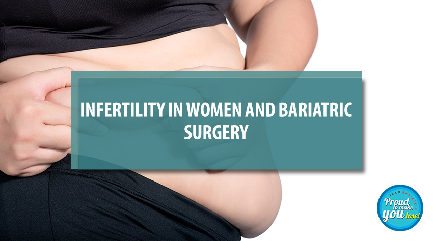

Improving Infertility in Women with PCOS: The Impact of Bariatric Surgery on Reproductive Health
The relationship between PCOS, obesity and infertility has been documented for many years. Anovulation, miscarriage, impairment in follicle formation and altered activity are the known effects of these. These women also face difficulty in managing diabetes, pre-eclampsia, growth disorders, higher rates of caesarean delivery, higher maternal mortality, and increased children’s risk for metabolic disease in the future.
A considerable weight loss can increase the chances of spontaneous ovulation, which is why the solution - bariatric surgery. This surgery is known to improve both fertility and pregnancy in women with reproductive concerns, polycystic ovarian syndrome (PCOS), along with metabolic syndrome (MS).
Bariatric Surgery's Positive Effect on Women
Bariatric surgery in reproductive-age women has been shown to decrease menstrual irregularities. Women suffering from hormonal imbalance show considerable improvement postoperatively, and chances of conceiving increase after this surgery. Sensitivity to leptin levels increases post-surgery, reflecting improved reproductive metabolic status. Many women (about 10%-25%) with subclinical hypothyroidism, haven also shown a significant improvement following surgical weight loss.
Women already take pregnancy into consideration when electing for bariatric surgery. Nowadays women undergoing surgery are aware of their own reproductive risks and a significant number of these women are thinking ahead.
Studies on Infertility in Women and Bariatric Surgery
Bariatric surgery has attracted the interest of many scholars with more individuals showing improved fertility post-weight loss treatment. An older study implied that a BMI drop greater than 5 kg/m2 was a significant predictor of fertility within 2.5 years of follow-up after surgery. There was also a trend of a reduced need for fertility treatment in women conceiving within 3 years of weight loss surgery compared to their need for fertility treatment prior to surgery. Reports also show previously anovulatory women conceiving post-operatively without ovulation induction agents.
Comparing Pregnancy Outcomes in Women Pre and Post-Bariatric Surgery
A study comparing pregnancy outcomes in women before and after weight loss surgery showed improvements in pregnancy-related hypertension and diabetes mellitus, and a significant drop in caesarean delivery rate too. Moreover, bariatric surgery did not result in increased rates of post-partum haemorrhage, infection, shoulder dystocia or foetal demise.
The benefits of bariatric surgery in women suffering from PCOS with metabolic syndrome are discussed extensively on various platforms, leading in favour of surgery in such cases. Nutritional and vitamin deficiencies in these women during that time frame of rapid weight loss can be dealt with supervised supplementation and regular follow-ups with the surgeon and obstetrician. There were no differences in maternal complications, foetal outcomes or delivery complications, making bariatric surgery a highly recommended solution and one of the best ways to lose weight in morbidly obese people.
Back to Blog